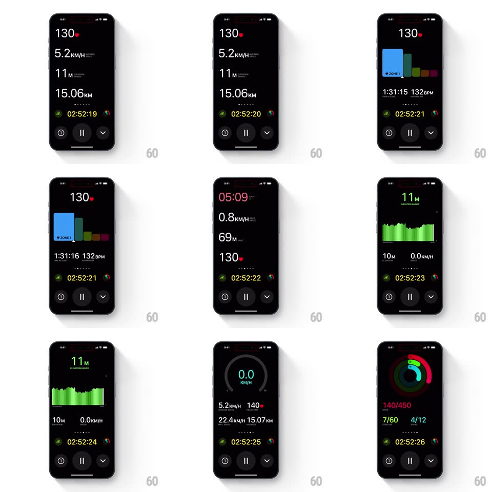

Media
Frame-by-frame

Rebuild this interaction 1:1: Apple Fitness workout metrics pager - horizontal swipes move between live metric layouts (heart rate stack, heart-rate zone bars, pace/elevation, elevation graph, speed ring, activity rings) with a springy snap, while the workout timer and control buttons stay pinned at the bottom.

Rebuild this interaction 1:1: Apple Fitness workout metrics pager - horizontal swipes move between live metric layouts (heart rate stack, heart-rate zone bars, pace/elevation, elevation graph, speed ring, activity rings) with a springy snap, while the workout timer and control buttons stay pinned at the bottom.
## Integration
Integration: stack-agnostic spec - springs given as stiffness/damping, timed motions as duration + curve; map every value to your framework and animation library of choice.
## Scene
Black full-screen workout view. Large monospaced metric stack (heart rate "130" with red heart glyph, average speed "5.2 KM/H", elevation "11 M", distance "15.06 KM"), page dots, a green-accent elapsed timer ("02:52:21") flanked by small ring icons, and a bottom row of three circular controls (water lock, pause, chevron). Alternate pages: heart-rate-zone bar chart, big pace/time stack, green elevation graph, gray speed ring, activity-rings summary.
## Motion spec
Pattern: horizontal paging between live metric layouts.
- Swipe moves pages 1:1 with the finger; adjacent page edges are visible during the drag.
- Release snaps to the nearest page (spring ~280/24, ~350ms, slight overshoot under 2%).
- Page dots update on settle; the active dot expands (width 6px -> 16px pill, 200ms).
- Live values (heart rate, timer) tick on every page; the bottom control row and timer strip never participate in the page motion.
## Calibration
- The spring has a gentle, physical settle - no bounce beyond ~2% overshoot.
- Pinned chrome (timer, controls) is the anchor: it must not translate or fade during swipes.
## Reduced motion
Crossfade between pages (200ms) on swipe, dots update without the width animation.
## Don't miss
- Each metrics page keeps its own typography scale: the primary value is ~3x the secondary values.
- The timer strip uses a green clock icon and monospaced digits that never reflow as seconds tick.